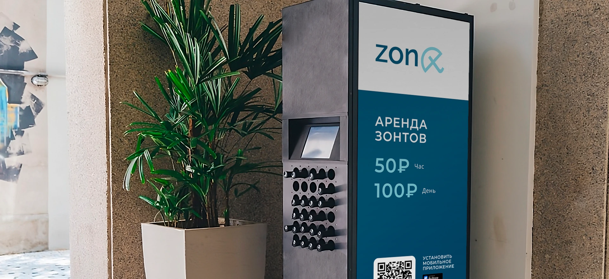
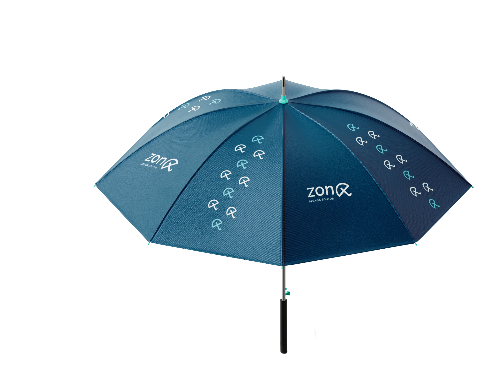
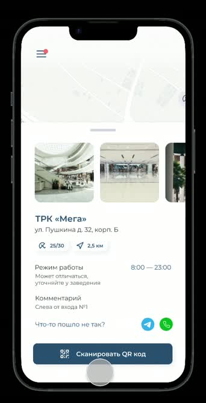

Как взять зонт напрокат
- Дизайн интерфейса
- Прототипирование в Figma
- UX-редактура
zont — концепт сервиса проката зонтов через городские автоматы. Я собрал прототип приложения и подготовил инструкцию для первой аренды.
Что этот опыт даёт UX-редактору
Когда я понимаю логику приложения и путь пользователя, могу писать текст под задачу каждого экрана: точно назвать действие, объяснить, что будет дальше, и дать подсказку в нужный момент. Например, если кнопка ведёт к выбору тарифа, её подпись должна обозначать этот шаг.


Как устроен прокат
На автомате указана стоимость проката на час и на день. Если человек впервые видит сервис на улице, он может перейти к установке приложения по QR-коду.




Как я спроектировал прототип
До макетов сравнил сценарии в сервисах аренды. Смотрел, как человек находит точку на карте, узнаёт цену и начинает аренду.
В zont связал карту, сканер и выбор тарифа. Продумал, что показать до оплаты и как продолжить, если QR-код не считывается. Для этого предусмотрел ручной ввод номера автомата.
